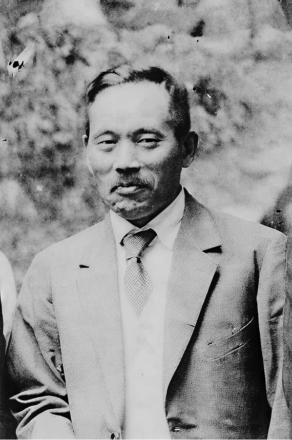

마키구치 선생님은 1928년 니치렌불법(日蓮佛法)에 입신한다. 법화경의 가르침과
인과이법(因果理法)에 기초한 니치렌불법은 마키구치 선생님의 기존 사고방식과 깊이
공명했다. 선생님은 니치렌불법의 교리와 자신이 추구했던 과학적이고 합리적인 접근방식
사이에 그 어떤 모순도 없다는 것을 알게 되었다.
마키구치 선생님이 창립한 단체 ‘창가교육학회’는 가치창조 교육에 대한 선생님의 관점을
알리기 위해 노력했다. 마키구치 선생님은 자신의 사상과, 대석사(大石寺)에 본거지를 둔
일련정종을 통해 전해진 니치렌불법에는 많은 공통점이 있다고 확신했다. 본래 교사와
교육자로 구성된 창가교육학회는, 1930년대를 기점으로 각계각층의 사람들을 포용하며
확대되었고, 단체의 목적 또한 교육개혁 촉진에서 종교개혁을 기반으로 하는 사회개혁
촉진으로 발전한다. 회원들의 가정에서 열리는 소규모 좌담회와 공공장소에서 정기적으로
개최하는 대규모 회합을 중심으로 활동했다.
일본의 제2차 세계대전 참전 분위기가 고조되자, 당국은 천황 숭배를 축으로 하는 국가신도
사상을 강요한다. 일련정종 또한 국가신도 수용을 권고했으나 이에 저항한 마키구치
선생님은 투옥, 결국 감옥에서 죽음을 맞이한다.
[이 글은 앤드루 거버트 동양철학연구소 연구원에 의해 작성되었다.]